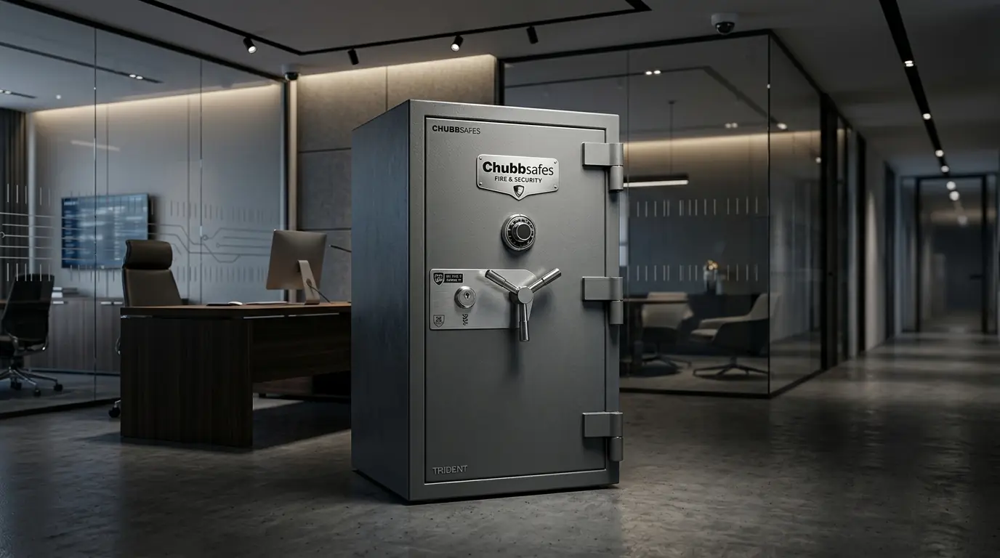
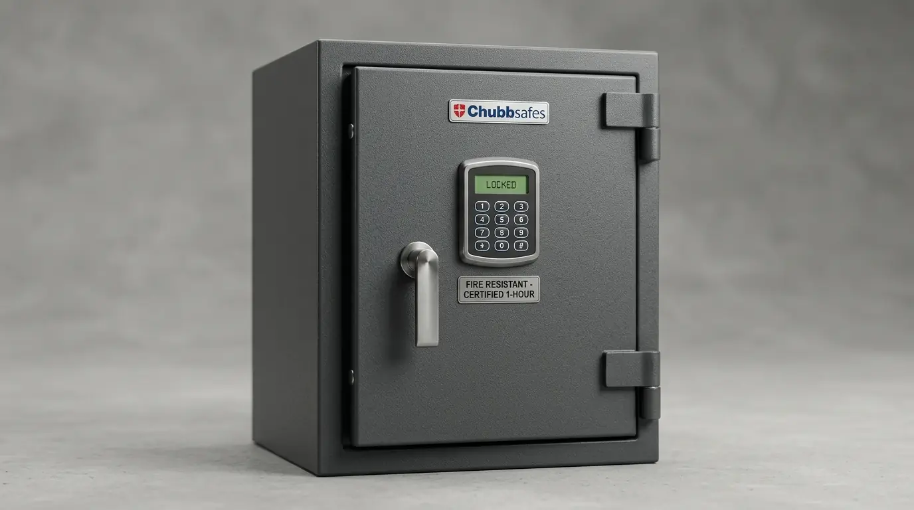

Distributor Resmi Brankas Kantor Tahan Api Chubbsafes Jakarta Pusat
Distributor brankas Chubbsafes Jakarta resmi menghadirkan brankas tahan api bersertifikat internasional UL 120 menit, sistem kunci ganda, dan garansi resmi B2B. Memilih distributor terpercaya menjamin keaslian spesifikasi material baja padat anti-bor serta perlindungan mutlak bagi dokumen hukum dan aset vital perusahaan Anda.


Koleksi Brankas Kantor Chubbsafes Tahan Api di Jakarta: Solusi proteksi arsip hukum, sertifikat, dan aset kas perusahaan dari bahaya kebakaran dan pembongkaran paksa.
- Sertifikasi Internasional UL & ECB-S: Perlindungan tahan api hingga suhu 1000°C selama 2 jam tanpa merusak kertas dan media data magnetik.
- Sistem Penguncian Ganda: Kombinasi kunci digital elektronik PIN dengan kunci manual 8-lever untuk keamanan berlapis anti-pembobolan.
- Layanan Angkut & Instalasi Khusus: Pemasangan brankas berat menggunakan perlengkapan hidrolik profesional dan anchoring dynabolt lantai.
- Jaminan Resmi & Faktur Pajak: Pembelian B2B langsung melalui distributor resmi bergaransi 5 tahun dan kelengkapan dokumen perpajakan lengkap.
- Mengapa Perlindungan Aset Membutuhkan Brankas Besi Tahan Api Bersertifikat Resmi?
- Apa Keunggulan Teknologi Chubbsafes Dibandingkan Merk Brankas Lainnya?
- Bagaimana Memilih Tipe Penguncian Digital Kombinasi vs Kunci Manual Ganda?
- Berapa Estimasi Harga Brankas Kantor Chubbsafes dan Layanan Pengirimannya?
- Mengapa Harus Membeli Melalui Distributor Resmi Chubbsafes Jakarta Pusat?
- Komparasi Spesifikasi Seri Brankas Kantor Chubbsafes
- Pertanyaan Seputar Brankas Chubbsafes (FAQ)
- Kesimpulan Praktis & Unduh Katalog Tekno
Mengapa Perlindungan Aset Membutuhkan Brankas Besi Tahan Api Bersertifikat Resmi?
Jual brankas kantor tahan api berkualitas tinggi memastikan suhu internal lemari penyimpanan tidak melebihi titik kritis terbakarnya kertas (177°C) saat terjadi bencana kebakaran hebat.
Bagi instansi perbankan, firma hukum, kantor akuntan, maupun perusahaan korporat di Jakarta, kehilangan dokumen legal seperti sertifikat tanah, akta pendirian, surat kontrak kerja sama, dan bukti kepemilikan aset dapat melumpuhkan operasional bisnis secara permanen. Banyak pengelola gedung kantor keliru menganggap lemari arsip plat besi biasa sudah cukup untuk melindungi dokumen. Faktanya, plat besi tipis justru menghantarkan panas secara instan ke dalam, membuat seluruh kertas di dalamnya hangus menjadi abu dalam waktu kurang dari 10 menit saat kebakaran terjadi.
Berdasarkan laporan riset dari Asosiasi Manajemen Aset Perkantoran (AMAP) periode 2025, sebanyak 76% kerugian arsip krusial pascainsiden kebakaran perkantoran disebabkan oleh penggunaan lemari penyimpanan tanpa sertifikasi uji standar tahan api resmi. Brankas Chubbsafes dirancang dengan dinding insulasi komposit semen berpori khusus yang menyerap panas ekstrem dan melepaskan kelembapan pendingin mikro saat terpapar suhu tinggi.
Apa Keunggulan Teknologi Chubbsafes Dibandingkan Merk Brankas Lainnya?
Chubbsafes memadukan material pelindung thermal komposit tahan benturan jatuh dari lantai atas dengan sistem pengunci relocking otomatis anti-bor.
Sebagai merk legendaris dengan pengalaman industri lebih dari dua abad, Chubbsafes menjadi standar acuan sistem keamanan di seluruh dunia. Salah satu fitur unggulan yang membedakannya adalah pengujian Drop Test: brankas dipanaskan hingga suhu 1000°C di dalam tungku pembakar selama 1 jam, kemudian dijatuhkan dari ketinggian 9,1 meter (setara gedung 3 lantai), lalu dibakar kembali. Jika pintu brankas tetap terkunci rapat dan dokumen di dalamnya utuh, barulah sertifikat ketahanan diberikan.
Selain ketahanan api, Chubbsafes dilengkapi plat baja berkekuatan tinggi (hardened steel plates) di area sekitar rumah kunci serta sistem glass relocker. Jika ada upaya pembobolan paksa menggunakan bor intan atau las asetilen, kaca sensorik internal akan pecah dan memicu pasak baja sekunder untuk mengunci pintu secara permanen dari dalam.

Mekanisme pengamanan mutakhir Chubbsafes: Dilengkapi panel digital backlit responsif, anak kunci duplikat terbatas, dan baut baja solid berdiameter 30 mm.
Bagaimana Memilih Tipe Penguncian Digital Kombinasi vs Kunci Manual Ganda?
Kunci digital elektronik sangat ideal untuk mobilitas tinggi dan multi-user, sedangkan sistem kunci manual ganda memberikan keandalan mekanis mutlak tanpa ketergantungan baterai.
Untuk ruangan bendahara dan keuangan yang memerlukan akses harian rutin, brankas tipe Electronic Digital Lock (seperti Chubbsafes Viper atau King Cobra) menawarkan efisiensi waktu terbaik. Pengguna cukup memasukkan 4 hingga 8 digit PIN tanpa risiko kehilangan anak kunci. Panel digital modern juga dilengkapi fitur time delay lock dan alarm otomatis jika terjadi 3 kali kesalahan input kode.
Sebaliknya, untuk penyimpanan arsip jangka panjang di ruang direksi atau ruang arsip rahasia (vault room), tipe kunci ganda (Kunci Manual Key Lock + Kunci Putar Kombinasi 3 Roda) tetap menjadi pilihan favorit karena bebas perawatan kelistrikan dan memiliki tingkat keamanan mekanik yang teruji puluhan tahun.
Berapa Estimasi Harga Brankas Kantor Chubbsafes dan Layanan Pengirimannya?
Harga brankas besi tahan api murah untuk seri kompak Chubbsafes dimulai dari Rp 4 jutaan, sedangkan seri korporat berat berkisar antara Rp 8 hingga Rp 25 jutaan.
Investasi pada brankas Chubbsafes merupakan perlindungan bernilai kecil jika dibandingkan dengan potensi kerugian miliaran rupiah akibat musibah kebakaran atau pencurian dokumen. Setiap tipe dirancang dengan dimensi yang disesuaikan dengan volume arsip ordner F4, baki laci uang, atau kotak perhiasan.
Menurut data statistik Penjualan Office Security Equipment Jakarta tahun 2026, merk Chubbsafes memimpin pangsa pasar pengadaan brankas korporat dengan tingkat retensi keandalan sebesar 99.4% selama lebih dari 10 tahun pemakaian aktif. Tim pengiriman kami menjamin pengangkutan aman sampai ke lantai target dengan perlindungan lantai kayu/marmer tanpa lecet.
Mengapa Harus Membeli Melalui Distributor Resmi Chubbsafes Jakarta Pusat?
Membeli dari distributor resmi memberikan jaminan unit 100% original, sertifikat tahan api pabrikan terverifikasi, serta garansi suku cadang dan layanan emergency opening resmi.
Di pasaran terbuka, sering kali beredar brankas rekondisi atau produk tiruan tanpa sertifikasi uji lab yang menggunakan plat tipis dan semen biasa. Membeli melalui Perlengkapan Kantor selaku rekanan distributor resmi di Jakarta Pusat memberikan Anda rasa tenang karena seluruh unit dipasok langsung dari pabrikan resmi dengan nomor seri unik terdaftar.
Kami juga menyediakan fasilitas penerbitan Faktur Pajak PPN 11% resmi untuk mempermudah pelaporan administrasi keuangan perusahaan rekanan B2B di seluruh wilayah Indonesia.
Komparasi Spesifikasi Seri Brankas Kantor Chubbsafes
Pilih seri brankas Chubbsafes yang paling sesuai dengan kapasitas arsip dan tingkat risiko keamanan kantor Anda:
| Seri / Model | Sertifikasi Tahan Api | Sistem Penguncian | Kapasitas / Bobot | Rekomendasi Ruang |
|---|---|---|---|---|
| Chubbsafes Viper 35-E | EN 14450 S2 + EN 15659 (30 Menit) | Digital Electronic PIN + Baut Kunci Ganda | 36 Liter / 46 Kg | Ruang Manajer / Home Office |
| Chubbsafes Senator 45 | ECB-S Grade I + Tahan Api 30 Menit | Kunci Manual Ganda / Digital Lock | 46 Liter / 142 Kg | Ruang Keuangan / Kasir |
| Chubbsafes King Cobra MK II | JIS S 1037 (120 Menit Api Suhu Tinggi) | Kombinasi Putar 3 Roda + Kunci Manual 8-Lever | 85 Liter / 290 Kg | Ruang Direksi / Notaris |
| Chubbsafes Europa Grade II | EN 1143-1 Grade II + 120 Menit Fire & Burglary | Sistem Penguncian Ganda Kelas Berat + Relocker | 140 Liter / 495 Kg | Vault Perbankan / Legal |
Pertanyaan Seputar Brankas Chubbsafes (FAQ)
Kesimpulan Praktis
Mengamankan arsip penting, sertifikat legal, dan dana operasional perusahaan memerlukan sistem proteksi fisik yang teruji secara ilmiah. Memilih unit melalui distributor brankas Chubbsafes Jakarta resmi menjamin perlindungan maksimal dari ancaman bencana kebakaran dan pembongkaran paksa, sekaligus memberikan nilai investasi jangka panjang bagi bisnis Anda.
Dapatkan spesifikasi lengkap, dimensi teknis, dan penawaran diskon pengadaan korporat spesial sekarang juga dengan Unduh Katalog Tekno Kantor atau konsultasi langsung bersama tim ahli Perlengkapan Kantor!
Penulis: Tim Spesialis Perlengkapan Kantor
Divisi Sistem Keamanan Fasilitas & Brankas Perkantoran di Perlengkapan Kantor. Berpengalaman dalam merancang skema proteksi aset fisik korporat, perbankan, dan instansi legal di seluruh Indonesia.